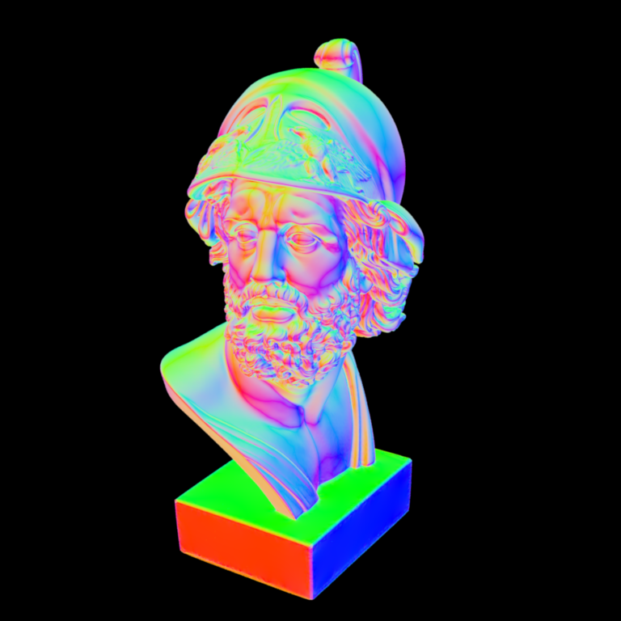

**Homework 2**
Student name: Virginie Piskin
Sciper number: 300542
Octree construction (50 pts)
============================
To implement the Octree construction function according to the template given in the exercise we had to think about structure representation of the Octree which would be most efficient in running time but which would also take as little memory as possible.
For this I created three classes:
* root: this class is virtual and works as a container for all the nodes in an octree, either inside nodes or end leaves. Each root is associated with a bounding box of the scene, therefore this functions contains a bounding box attribute indicating its min and max coordinates and partioning the scene.
* node: this class inherites from the root class and represents the inside nodes of an octree. The inside nodes contain a list of roots (inside nodes or end leaves) which are called the children of the node. Here, as we are implementing a function to construct an Octree, each node contains a number of 8 children roots. As the number of children is fixed, for the purpose of this exercise we should use a table of pointers which is static.
* leaf: this class inherites from the root class and represents the end leaves of an octree. The end leaves contain a list of triangle ids associated to the smallest bounding box dividing the scene. As the number of triangles per bounding box depends on the splitting, it isn't a constant value. Therefore, the length of the triangle list varies with the leaves. This is why we used a dynamic vector of uint32 (type of triangle ids) to store the list of triangles ids.
In general, when defining the member functions of these three classes we had to use as much as possible references and pointers (avoided as much as possible because it might lead to many errors) when giving parameters.
There are 2 reasons for that:
* Using references or pointers allows us to keep the information of the node and leaf classes even when they are returned as a root object.
* Using references or pointers allows us to avoid copying objects when giving objects as parameters which makes the execution faster.
The structure representation could also have been different, consisting of only a node class or two classes node and leaf which might have been simpler to implement.
However, if we only had a node class, each node would have had a list of children and a list of triangles as attributes and if we had a leaf class inheriting from the node class then each leaf would have had a children list.
Therefore, some unnecesseray data would have been created for each node or leaf. This explains the choosen representation here, which doesn't store extra information and provides a coherent data structure.
1. What information do you store per octree node?
* node: bounding box and list of pointers on roots
* leaf: bounding box and vector of triangle ids
2. How many bytes of memory does one of your octree nodes occupy?
* node: 88 bytes = 2 (Points) * 3 (Coordinates) * 4 (Float) + 8 * 8 (Pointer)
* leaf: 54 bytes ~ 2 (Points) * 3 (Coordinates) * 4 (Float) + 10 (Nb Triangles) * 3 (uint32_t)
3. Statistics for the Ajax scene:
* Construction time: 2.4 ms for a test xml (1 sample per pixel 10*10 pixels) which represents 2.4 * 32 * 76.8 * 76.8 ~ 8 min for the real xml (32 samples per pixels 780*780 pixels)
* Number of interior nodes: 1732
* Number of leaf nodes: 6245
* Average number of triangles per leaf node:
Ray traversal (25 pts)
======================
I changed the brut force code by adding two functions:
* One which traverses the Octree recursively to check intersection between the bounding boxes contained in the inside nodes.
* One which checks the intersection between the ray and the triangles contained in a leaf
The ray intersection doesn't work properly, I am guessing the problem comes from the way I am giving back the closest triangle index intersected with the ray.
Indeed, we can see in the output image that a very small area of the scene is visible, which might indicate that the intersection of the ray with the triangles isn't made correctly.
However I did not have enough time to fix the problem.
1. How long did it take to render the scene on your machine? 1.8 seconds (even if the code doesn't work correctly, this is the result I am getting).
2. How much of a speed-up did you achieve over what was there before? You may need to reduce both resolution and number of samples per pixel of the scene and extrapolate to obtain an estimate of the time required by the brute force algorithm (this is based on the reasonable assumption that the rendering time is proportional to the product of the number of pixels and samples per pixel.)
We went from 8 min to around 2 seconds which corresponds to a speed up of 240 (again it might not make much sense as the code doesn't work properly).
Improved ray traversal (25 pts)
===============================
Surface normal visualization of the Ajax bust:

Note: Nori automatically generates both an `.exr` as well as an sRGB tonemapped `.png` image of your rendering that is directly used for the comparison above. Please still commit both versions in your `results/homework-X` folder.
Feedback
========
We would appreciate any comments or criticism to improve the projects in future years--naturally, this part will not be graded. Examples of information that is useful to us includes:
* How much time did you spend on the assignment? How was it divided between designing, coding, and testing? Around 5 days
* What advice should we have given you before you started? Understand the problem better and ask questions of how I should tackle the problem. Start before the first lab session.
* What was hard or surprising about the assignment? That we had to make the classes own our own and that is was not really guided.
* What did you like or dislike? What else would you change? I dislike the amount of time of debugging and the implementations mistakes I did because I didn't understand the problem correctly. It would be nice to work in pairs so that we can avoid spending too much time for unecessary things.